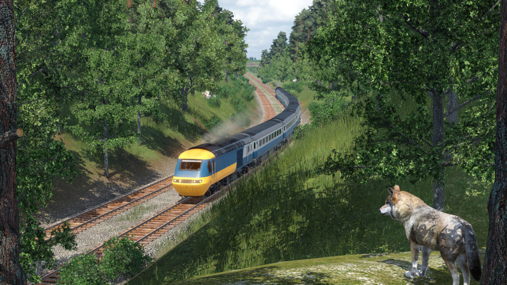
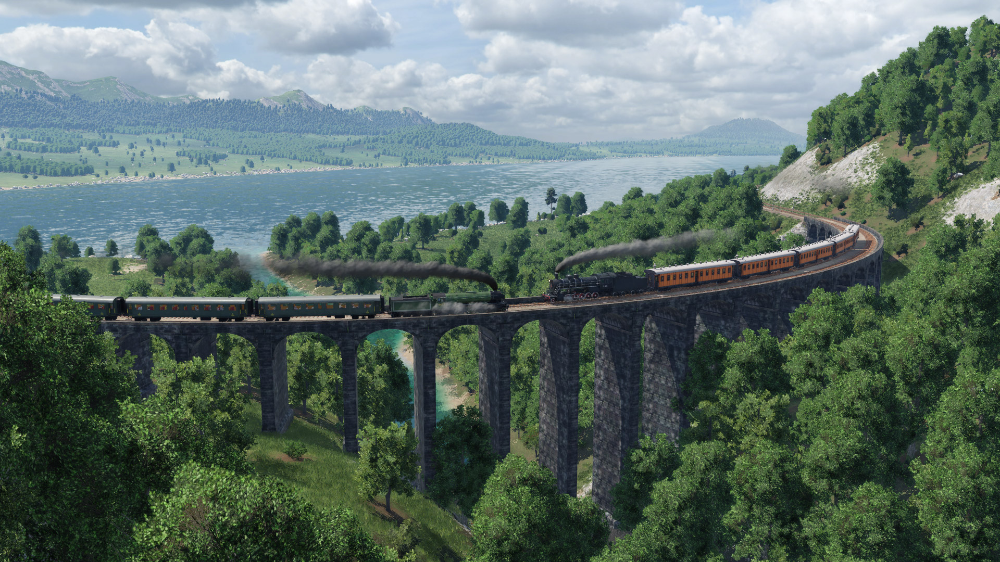

Biztosítsa a világot a számára szükséges közlekedési infrastruktúrával, és keressen vagyont egyedi szállítási szolgáltatásokkal. Nézze meg, ahogy vonatai síneken futnak, buszai és teherautói mennydörögnek az utakon, hajói áthaladnak a vízen, repülői pedig szárnyalnak az egeken. Vigye az embereket munkába vagy játékba, és legyen az oka a városok növekedésének és virágzásának. Nyersanyagok és áruk szállítása a gazdaság fellendítésére. Tapasztalja meg a legnagyobb logisztikai kihívásokat 1850-től napjainkig, és építsen fel egy olyan szállítási birodalmat, amely a világon bárhol máshol páratlan! Az ingyenes játék a kreatív lehetőségek széles skáláját kínálja, míg a kampánymód három kontinens közlekedési történetét írja újra. A Transport Fever 2 több mint 200 jármű közül választhat Európából, Amerikából és Ázsiából, rendkívül részletesen modellezve; a játékon belüli térképszerkesztővel pedig három különböző éghajlati zónából készíthetsz újra tájakat. Végül a valósághű közlekedési és gazdaságos szimulátor, valamint az átfogó módosítási támogatás (Windows/Linux/Mac) teszi teljessé a játékélményt.
A játékhoz számtalan mod van így végtelenek a lehetőségek
Jelenleg csak 2 dlc van a játékhoz